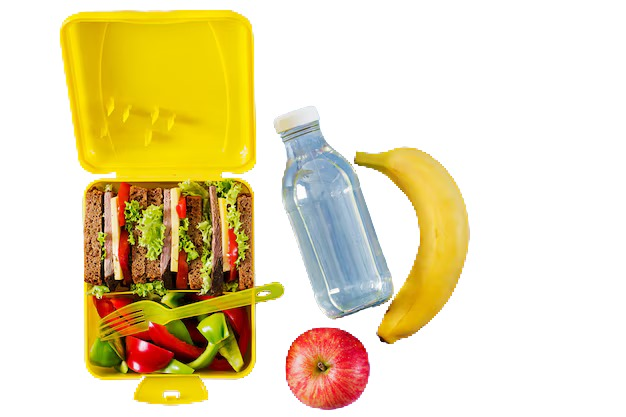

APÓS
Clique aqui para ver as orientações pós doação
- É oferecido um lanche para auxiliar na reidratação;
- Ingerir muito líquido durante o dia e fazer as refeições;
- Evitar carregar peso e exercícios no dia da doação;
 Você sentirá a sensação de transformar a realidade de alguém!
Você sentirá a sensação de transformar a realidade de alguém!Muito obrigada pela sua Doação.